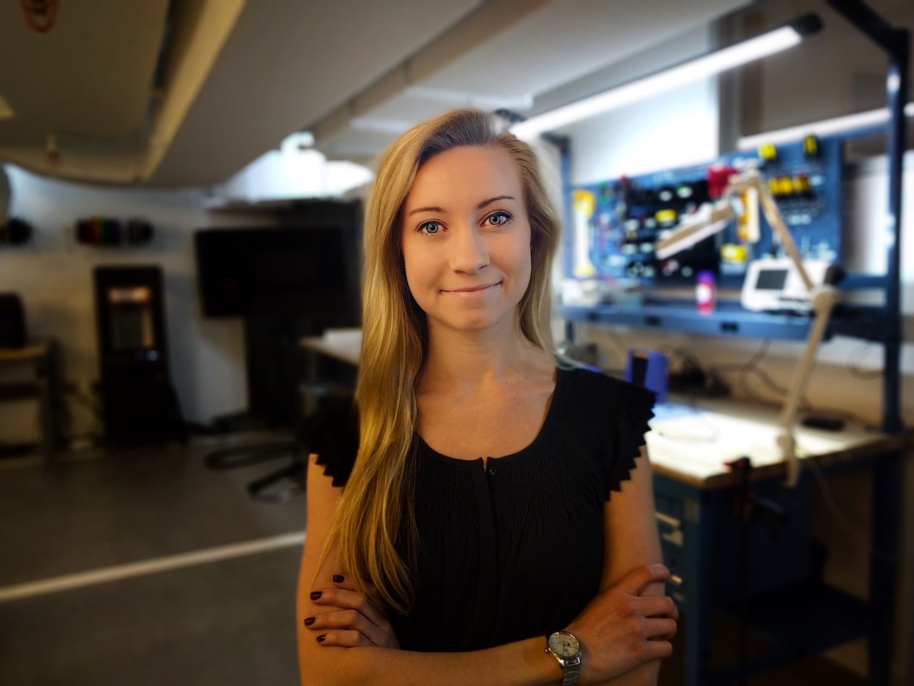

Casey Colby
Junior web developer with an affinity for linguistics
@work
Lab manager and software developer for Northwestern University's Child Language Development Lab, after receiving a B.A. in Economics and Linguistics from Northwestern University in 2015.
Developing mobile applications to extend the Child Lab's experimental capabilities with children sparked her zeal for programming.
@school
Making the leap towards full time web development: Learning to learn and problem-solve in any language like a programmer, write good code, and develop web applications with JavaScript, HTML, CSS, and Node.js in Northwestern University's full-stack coding bootcamp.
@home
As a jazz/latin pianist and drummer, Casey loves to make music and explore the Chicago Jazz Scene.